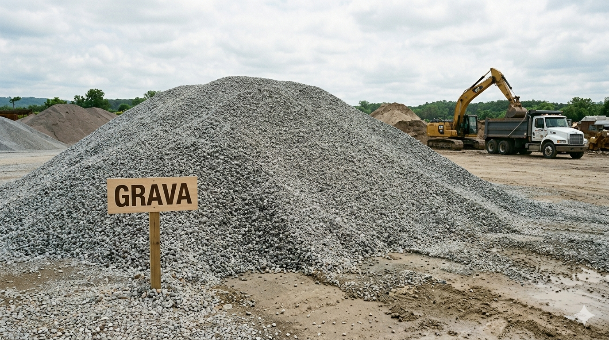
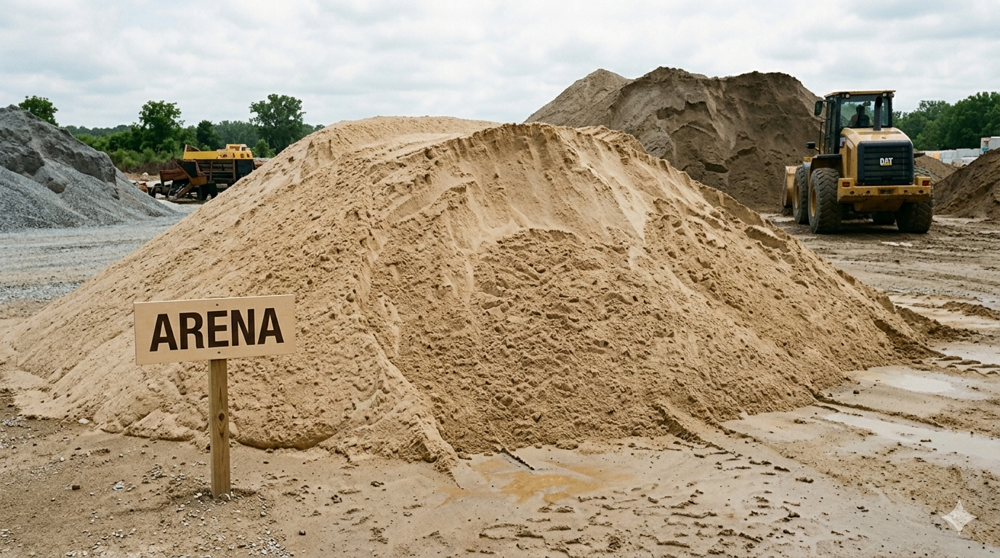
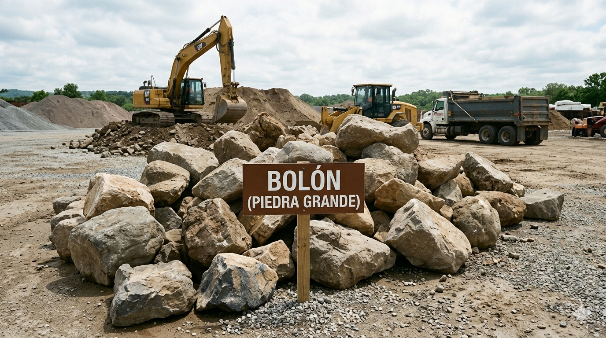

Materiales De Construcción
Ofrecemos materiales de construcción confiables para todo tipo de obra, garantizando resistencia, durabilidad y calidad para proyectos residenciales, comerciales e industriales.
Ofrecemos una amplia gama de materiales de construcción de alta calidad, incluyendo bloques, adoquines, arena, base, bolón y material selecto, ideales para todo tipo de proyectos. Nos enfocamos en abastecer obras con productos confiables y duraderos, garantizando un excelente rendimiento en cada etapa de la construcción. Nuestro compromiso es brindar soluciones integrales que aporten solidez, eficiencia y eguridad a cada proyecto, respaldados por un servicio responsable y orientado a la satisfacción del cliente.
ContactanosPonemos a disposición de nuestros clientes materiales de construcción de alta calidad, reconocidos por su rendimiento y durabilidad.
Ofrecemos materiales de construcción confiables para todo tipo de obra, garantizando resistencia, durabilidad y calidad para proyectos residenciales, comerciales e industriales.

Suministramos grava de excelente calidad, ideal para aplicaciones en concreto, drenajes, bases estructurales y diversas obras civiles.

Ofrecemos arena de calidad para construcción, apta para mezclas, repellos, rellenos y múltiples aplicaciones. Nos aseguramos de brindar un material limpio, confiable y adecuado para garantizar buenos resultados y eficiencia en la ejecución de las obras.

Disponemos de bolón o piedra grande de alta resistencia, ideal para obras de contención, drenajes, estabilización de terrenos y proyectos de infraestructura. Nuestro material ofrece durabilidad y solidez para aplicaciones que requieren soporte estructural confiable.

Suministramos piedra triturada de excelente calidad para uso en bases, concretos, rellenos y proyectos de construcción en general. Garantizamos un material resistente y adecuado para contribuir al buen desempeño estructural de cada obra.

Ofrecemos material selecto ideal para rellenos, nivelaciones y mejoramiento de terrenos, proporcionando una base estable y segura para proyectos de construcción. Nuestro material cumple con las características necesarias para garantizar eficiencia y durabilidad en la obra.

Contamos con materiales de base y sub base de alta calidad para la preparación de caminos, calles, plataformas y obras de infraestructura. Estos materiales proporcionan estabilidad, resistencia y soporte adecuado para garantizar una estructura sólida y duradera.

Ofrecemos tierra para relleno apta para nivelaciones, compactaciones y acondicionamiento de terrenos. Garantizamos un material adecuado para contribuir a la preparación eficiente del terreno y al desarrollo seguro de cualquier proyecto constructivo.